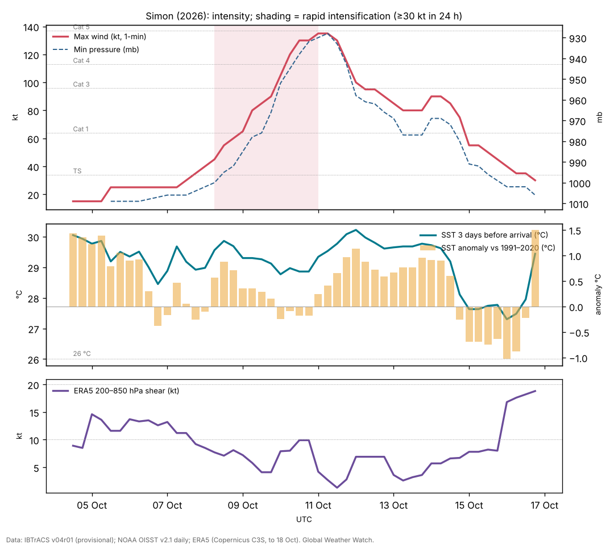

Hurricane Simon (October 2026): a tiny Category 4 that brushed the Jalisco coast
Abstract
Simon was a very small, very intense hurricane that spent almost a week close to the coast of west-central Mexico without making landfall. It became a tropical depression south of Mexico on 7 October, a hurricane at 9 Oct 0000 UTC, and then intensified by up to 45 kt in 24 hours, reaching a provisional peak of 135 kt (155 mph, Category 4) and about 928 mb on 10–11 October, while its northern eyewall lay about 30 n mi off the coast of Jalisco. Aircraft found concentric eyewalls at the peak. Simon then weakened over two days as mid-level dry air and shear disrupted its tiny core, stalled in weak steering currents, briefly re-intensified to about 90 kt on 13–14 October, collapsed again to a tropical storm within a day, and dissipated off Baja California Sur on 16 October. The sea along its path was warm (29.3 °C before the peak, +0.4 °C against normal) and its own cold wake was small in the 0.25° analysis. One death in Guerrero was attributed to Simon. The case illustrates how small hurricanes can change intensity very fast in both directions, and how weak steering turned a forecast landfall into a long coastal brush.
Main findings
- Explosive intensification of a tiny core. Winds rose from 45 kt to 135 kt between 8 Oct 0600 UTC and 11 Oct 0000 UTC, with a pinhole eye on 9 October NHC discussion 11. Forecast guidance had given about a 70% chance of 30 kt in 24 hours NHC discussion 7.
- Eyewall replacement at the peak. On 10 October the eye widened, suggesting an eyewall replacement cycle overnight NHC discussion 13; aircraft found concentric eyewalls of 12 and 36 n mi radius, 932 mb and 134 kt at 700 mb, and a radar satellite recorded 138 kt NHC discussion 14.
- A near miss. The northern eyewall came within about 30 n mi of the coast on 10–11 October NHC discussion 15; IBTrACS places the centre 45 km from land at 1800 UTC on 11 October. Simon never made landfall; weak steering then held it offshore for five days.
- Fast changes in both directions. After weakening, Simon re-strengthened to about 90 kt on 13–14 October, then lost hurricane strength within about 24 hours; the forecaster noted that small cyclones 'can undergo rapid weakening as well as rapid intensification' NHC discussion 30.
- Impacts. One death in Chilpancingo, Guerrero; flooding and road damage in coastal Guerrero including Acapulco; disruption at Puerto Vallarta airport.
1. Introduction
Simon was the third of four major hurricanes in four weeks off southwestern Mexico in 2026 (Polo, Rachel, Simon, Trudy), in a season with accumulated cyclone energy 2.7 times the normal for the date by 22 October [8] and during a very strong, east-based El Niño [9]. It is notable for its very small size, its extreme peak close to land, and the poor predictability of both its track and its intensity. This paper reconstructs its life cycle and the conditions behind its intensity changes.
2. Data and methods
Track and intensity. Six-hourly positions, 1-minute maximum sustained winds and minimum pressures from IBTrACS v04r01 [1], downloaded on 24 October 2026. For 2026 these are provisional values carried over from the operational advisories (National Hurricane Center); the official best track, issued in the post-season report, can differ. Rapid intensification (RI) is an increase of at least 30 kt in 24 hours [2]. Accumulated cyclone energy (ACE) sums the squared 6-hourly winds at tropical-storm strength or above.
Ocean. Sea-surface temperature (SST) and its anomaly against 1991–2020 from NOAA OISST v2.1 daily [3], sampled at each 6-hourly position three days before the storm arrived, so that the storm's own cooling is excluded; the change from three days before to three days after gives the cold wake. OISST is a 0.25° analysis and smooths very small wakes.
Atmosphere. Wind shear and mid-level humidity are taken from the forecasters' own analyses in the advisories and discussions (which use the SHIPS model and satellite estimates), quoted with date and time. In addition, the deep-layer (200–850 hPa) vertical wind shear was computed from ERA5 (Hersbach et al. 2020, in the references) as the difference of the winds averaged over a 200–800 km ring around each position, using daily means of 00 and 12 UTC on a 2.5° grid, with data to 18 October 2026. This coarse estimate captures the large-scale shear but not shallower or mid-level shear, which forecasters sometimes cite. The Madden–Julian oscillation (MJO) is described by the real-time RMM index [4] (phase and amplitude; amplitude ≥ 1 means an active MJO). ENSO values are NOAA CPC indices (RONI JAS 2026 +1.69 °C; weekly relative Niño 3.4 +2.4 °C in mid-October).
Impacts. Deaths, damage and observations are taken from official statements where available and otherwise from wire-service reports, each cited; figures are preliminary.
3. Life cycle

Genesis (4–7 October). IBTrACS follows the precursor disturbance from 4 Oct 1200 UTC near 11.8°N, 91.5°W. Tropical Depression Twenty-E formed at 1500 UTC on 7 October south of Mexico, with curved bands and a well-defined circulation, in low shear, abundant moisture and very warm water NHC discussion 1.
Rapid intensification (8–11 October). On 8 October the SHIPS rapid-intensification index gave a 63% chance of a 55 kt rise in 48 hours NHC discussion 4; by evening every ocean, dynamic and thermodynamic factor favoured quick strengthening NHC discussion 7. Simon became a hurricane at 9 Oct 0000 UTC. A very small central dense overcast with −83 °C cloud tops formed over the centre NHC discussion 8, and by 9 October a pinhole eye was visible NHC discussion 11. The largest 24-hour rise, 45 kt, came between 9 Oct 1200 UTC and 10 Oct 1200 UTC. Overnight on 9–10 October the eye widened, which suggests an eyewall replacement cycle NHC discussion 13; on the afternoon of 10 October aircraft found concentric eyewalls (inner 12 n mi, outer 36 n mi), 932 mb and 134 kt at 700 mb, and a Canadian radar satellite pass gave 138 kt NHC discussion 14. The provisional peak is 135 kt at 11 Oct 0000 UTC.
Coastal brush and first weakening (11–13 October). On the evening of 10 October the northern eyewall was about 30 n mi off the coast NHC discussion 15; a landfall between Playa Perula and Cabo Corrientes remained possible until the afternoon of 11 October, when it became clear that Simon would stay offshore NHC discussion 17, NHC discussion 18. Cloud tops then warmed and mid-level dry air wrapped around the west side NHC discussion 19; mid-level easterly shear opened the eyewall on its northwest side on 12 October NHC discussion 21, NHC discussion 22. Winds fell to about 80 kt.
Second peak and collapse (13–16 October). Late on 13 October the eye became distinct again and deep convection more symmetric; the hurricane 'remains tiny' NHC discussion 27. IBTrACS gives 90 kt at 0000 UTC on 14 October. By the next morning the eye had filled under northerly shear NHC discussion 28, and on 14 October a radar satellite measured only 65–75 kt in the eyewall and an aircraft found no hurricane-force winds at 700 mb NHC discussion 30. The tropical-storm-force winds reached only about 30 n mi from the centre and the pressure had risen to 991 mb NHC discussion 31. Southwesterly shear and dry air finished Simon on 16 October; it became a remnant low off Baja California Sur NHC discussion 37, NHC discussion 38.
| Quantity | Value |
|---|---|
| Source of winds and pressures | NHC operational values |
| First and last fix (UTC) | 4 Oct 1200 UTC – 16 Oct 1800 UTC |
| First fix position | 11.8°N, 91.5°W |
| Peak 1-minute wind | 135 kt (155 mph, 250 km/h), Category 4, 11 Oct 0000 UTC near 18.0°N, 104.8°W |
| Lowest pressure | 928 mb |
| Largest 24-hour increase | 45 kt (9 Oct 1200 UTC to 10 Oct 1200 UTC) |
| Time at tropical-storm / hurricane / major strength | 216 / 144 / 54 hours |
| Accumulated cyclone energy (ACE) | 26.9 × 10⁴ kt² |
| Track length and mean speed | 2,782 km at 9.5 km/h |
| Closest provisional distance to land | 45 km, 1800 UTC 11 Oct (115 kt) |
| Aircraft peak (10 Oct) | 932 mb; 134 kt at 700 mb; SAR 138 kt; concentric eyewalls 12 and 36 n mi |
IBTrACS v04r01, provisional (operational NHC values). The first fixes are the precursor disturbance.
4. Environment
Ocean. Before the peak the sea along Simon's path averaged 29.3 °C, +0.4 °C above the 1991–2020 normal, and nowhere below 28.4 °C. At the peak position it was 29.3 °C (+0.2 °C). Simon's own cold wake in the 0.25° analysis was at most 0.8 °C; a storm this small mixes a narrow swath that the analysis smooths out, so the true cooling under the core was probably larger. On 13 October the forecaster could not tell whether warming cloud tops reflected the daily cycle or upwelled cool water under the slow-moving hurricane NHC discussion 26; by 16 October the remnant was still over 28–30 °C water NHC discussion 37, so the final decay was atmospheric.
Shear and moisture. Through 10 October shear was low and the mid-troposphere moist NHC discussion 1, NHC discussion 9. The weakening of 11–12 October came with mid-level dry air on the west side and mid-level easterly shear 'undercutting the outflow layer' NHC discussion 19, NHC discussion 21; the collapse of 14 October followed northerly shear NHC discussion 28, NHC discussion 29; and southwesterly shear with dry mid-level air ended Simon NHC discussion 36.
ERA5 shear. Deep-layer (200–850 hPa) shear was 11–15 kt during formation, then only 1–10 kt from 8 to 15 October, and rose to 18 kt on 16 October (Figure 1). The weakening episodes of 11–12 and 14 October therefore happened under low deep-layer shear: the mid-level easterly and northerly shear and dry air described by forecasters, which a 200–850 hPa difference on a 2.5° grid does not capture, together with Simon's tiny size, are the more likely causes.
Size. Simon's very small inner core made its intensity especially volatile: forecasters called peak intensities 'virtually impossible to predict' NHC discussion 11. Small cyclones are more likely to undergo rapid intensification [5], and Simon shows that the same small size allowed equally fast weakening.
MJO. The RMM index was in phase 2 (amplitude 1.0) at genesis and phase 2 (1.1) at the peak. The MJO modulates eastern Pacific hurricanes [7]; its role here is not tested.
5. Track and steering
Simon first moved west-northwest along the south side of a weak mid-level ridge NHC discussion 1. A mid- to upper-level trough approaching Baja California was expected to turn it sharply north on 9–10 October, towards the coast; the models agreed on the pattern but not on the timing, and a small difference decided between landfall and a coastal brush NHC discussion 5, NHC discussion 9. Simon turned north between a ridge over southern Mexico and a long-wave trough to the west NHC discussion 12 and passed just offshore. From 12 October it lay between a ridge over the south-central United States and another building to its west and southwest, and drifted slowly northwest, then southwest NHC discussion 22, NHC discussion 24, NHC discussion 28. Mexico's civil protection at one point expected a landfall at Mazatlán as a Category 1 hurricane [12]; instead the shallow remnant moved northwest, parallel to Baja California Sur NHC discussion 36.
6. Impacts
Before the closest approach Jalisco suspended classes in 22 coastal municipalities and began evacuations, public transport was suspended and the Puerto Vallarta boardwalk was closed; the president asked people in four states to shelter in place [13]. A 71-year-old man died when a wall collapsed in Chilpancingo, Guerrero, during Simon's rain [12]. Heavy rain in Guerrero toppled trees and utility poles, blocked roads and flooded homes in coastal communities including Acapulco; Nayarit and Sinaloa were on alert for rising rivers; operations at Puerto Vallarta's airport were resuming on 13 October [14]. On 12 October waves were still crashing along the Puerto Vallarta seafront [12]. Press tallies that combine Simon and the remnants of Rachel (six deaths by 13 October) include five deaths in Ensenada caused by Rachel [14]. Damage estimates and rainfall totals were not available for this paper.
7. Climate context
Simon formed over water about half a degree warmer than normal in a very active season during a strong El Niño [8], [9]. No attribution study exists. Its most remarkable features, the tiny core, the extreme intensity changes and the stalling track, are governed by storm-scale and synoptic processes that are not specific to El Niño.
8. Uncertainties
- Provisional track and intensities; the peak and the second peak may be revised in the official report. For such a small storm, satellite estimates were especially uncertain between aircraft flights.
- The 0.25° SST analysis underestimates the cold wake of a very small hurricane.
- Shear and humidity are operational estimates, not an independent reanalysis.
- Impact figures are early press reports.
9. Conclusion
Simon combined favourable conditions (warm water, low shear, moist air) with a very small inner core, and intensified explosively to Category 4 within 50 km of the Jalisco coast. Its weakening was as abrupt as its strengthening, driven by dry air and shifting shear, and weak, conflicting steering kept it offshore for most of a week. The coast escaped a direct hit by a narrow margin, but the repeated rain contributed to saturated ground before Trudy arrived a week later.
Media evidence (links)
Videos, photographs, satellite images and news reports that document the storm. They are supporting evidence only: the analysis above does not rely on them, and the material belongs to its publishers, so it is linked rather than copied. Press videos and social-media clips are not independently verified.
| Type | What it shows | Source | Link |
|---|---|---|---|
| Satellite image | "Hurricane Simon Lurks Off the Mexican Coast": VIIRS day image of the eye and a night image of atmospheric gravity waves in airglow (11 Oct; published 14 Oct) | NASA Earth Observatory | science.nasa.gov |
| Satellite imagery and track | Satellite loops and the track, 7–16 Oct | Zoom Earth | zoom.earth |
| Official graphics | Forecast cones, wind field and wind history | NHC archive | www.nhc.noaa.gov |
| News and photo | Simon pounds resorts and towns on Mexico's Pacific coast; NOAA satellite photo (11 Oct) | AP via Fox5 Las Vegas | www.fox5vegas.com |
| News | One dead in Chilpancingo; waves on the Puerto Vallarta seafront (12 Oct) | AFP via Jamaica Observer | www.jamaicaobserver.com |
Evidence table
| Factor | Observed conditions and timing | Proposed role | Evidence type | Confidence | Key sources |
|---|---|---|---|---|---|
| ERA5 deep-layer shear | 1–10 kt, 8–15 Oct | Favourable for RI; did not cause the weakening episodes | Reanalysis (ERA5) | High | [10] |
| Warm ocean | SST 29.3 °C (+0.4) before the peak | Supported rapid intensification | Observed (OISST) | High | [3] |
| Low shear, moist air | Through 10 Oct (NHC, SHIPS) | Allowed rapid intensification | Operational analysis | High | [11] |
| Very small inner core | Pinhole eye 9 Oct; TS-force winds only ~30 n mi on 14 Oct | Made intensity changes fast in both directions | Observed (satellite, aircraft); literature for RI | High | [11] [5] |
| Eyewall replacement | Concentric eyewalls 12 and 36 n mi, 10 Oct | Probably ended the peak | Aircraft observation | Medium | [11] |
| Dry air and changing shear | Easterly (12 Oct), northerly (14 Oct), southwesterly (15–16 Oct) | Caused the weakening episodes | Operational analysis | High | [11] |
| Weak, conflicting steering | Between ridges and a trough off California | Near-miss of the coast; long stall offshore | Operational analysis | High | [11] |
References
- Knapp, K. R., M. C. Kruk, D. H. Levinson, H. J. Diamond and C. J. Neumann (2010). The International Best Track Archive for Climate Stewardship (IBTrACS). Bulletin of the American Meteorological Society 91, 363–376. Data: IBTrACS v04r01, NOAA NCEI (2026 positions provisional). doi:10.1175/2009BAMS2755.1 [bibliographic record; data read]
- Kaplan, J., and M. DeMaria (2003). Large-scale characteristics of rapidly intensifying tropical cyclones in the North Atlantic basin. Weather and Forecasting 18, 1093–1108. doi:10.1175/1520-0434(2003)018<1093:LCORIT>2.0.CO;2 [abstract read]
- Huang, B., et al. (2021). Improvements of the Daily Optimum Interpolation Sea Surface Temperature (DOISST) Version 2.1. Journal of Climate 34, 2923–2939. Data via NOAA PSL. doi:10.1175/JCLI-D-20-0166.1 [abstract read; data read]
- Wheeler, M. C., and H. H. Hendon (2004). An all-season real-time multivariate MJO index: development of an index for monitoring and prediction. Monthly Weather Review 132, 1917–1932. doi:10.1175/1520-0493(2004)132<1917:AARMMI>2.0.CO;2 [abstract read]
- Carrasco, C. A., C. W. Landsea and Y.-L. Lin (2014). The influence of tropical cyclone size on its intensification. Weather and Forecasting 29, 582–590. doi:10.1175/WAF-D-13-00092.1 [abstract read]
- Price, J. F. (1981). Upper ocean response to a hurricane. Journal of Physical Oceanography 11, 153–175. doi:10.1175/1520-0485(1981)011<0153:UORTAH>2.0.CO;2 [abstract read]
- Maloney, E. D., and D. L. Hartmann (2000). Modulation of eastern North Pacific hurricanes by the Madden–Julian oscillation. Journal of Climate 13, 1451–1460. doi:10.1175/1520-0442(2000)013<1451:MOENPH>2.0.CO;2 [abstract read]
- Colorado State University, Department of Atmospheric Science: real-time tropical cyclone season statistics (ACE and storm counts to date by basin), read 22–23 October 2026; site copy data/ace_season.csv. https://tropical.atmos.colostate.edu/Realtime/ [data read]
- Global Weather Watch (2026). The 2026 El Niño against 1982–83, 1997–98 and 2015–16: a preliminary comparison (Paper 4). enso-2026.html [own analysis]
- Hersbach, H., et al. (2020). The ERA5 global reanalysis. Quarterly Journal of the Royal Meteorological Society 146, 1999–2049. 2026 data: Copernicus Climate Change Service Climate Data Store (u, v at 850 and 200 hPa, to 18 October 2026). doi:10.1002/qj.3803 [full text read (open access); data processed]
- National Hurricane Center: Hurricane Simon (EP202026) advisory archive, forecast discussions 1–38, 7–16 October 2026 (US Government, public domain). Text copies in data/tc2026/nhc/SIMON/. https://www.nhc.noaa.gov/archive/2026/SIMON.shtml [read in full]
- AFP (2026). Hurricane Simon leaves one dead, causes damage on Mexico's Pacific coast. 12 October 2026 (via Jamaica Observer). https://www.jamaicaobserver.com/2026/10/12/hurricane-simon-leaves-one-dead-causes-damage-mexicos-pacific-coast/ [read]
- Associated Press (2026). Hurricane Simon pounds resorts and vulnerable towns along Mexico's Pacific coast. 11 October 2026 (via Fox5 Las Vegas). https://www.fox5vegas.com/2026/10/11/ferocious-hurricane-simon-nears-mexico-with-155-mph-winds-flooding-fears/ [read]
- Associated Press (2026). Death toll rises to 6 as Hurricane Simon and Rachel remnants unleash floods in Mexico. 13 October 2026 (via ITV News). https://www.itv.com/news/2026-10-13/hurricane-remnants-unleash-deadly-floods-in-mexico-killing-at-least-6 [read]